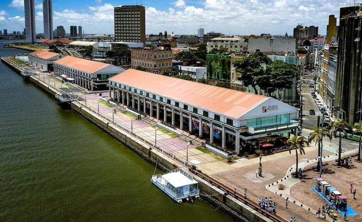

Armazém do Porto

Do lado direito da praça encontra-se os Armazéns do Porto! Um espaço de entretenimento e gastronomia, com várias opções de bares e uma vista excelente onde recifenses e turistas jogam papo fora nos fins de tarde e à noite.
Vamos dar a dica de três desses restaurantes que você não pode deixar de ir e provar algumas comidinhas com sabor do nordeste: Café São Braz, Frisabor e Seu Boteco.